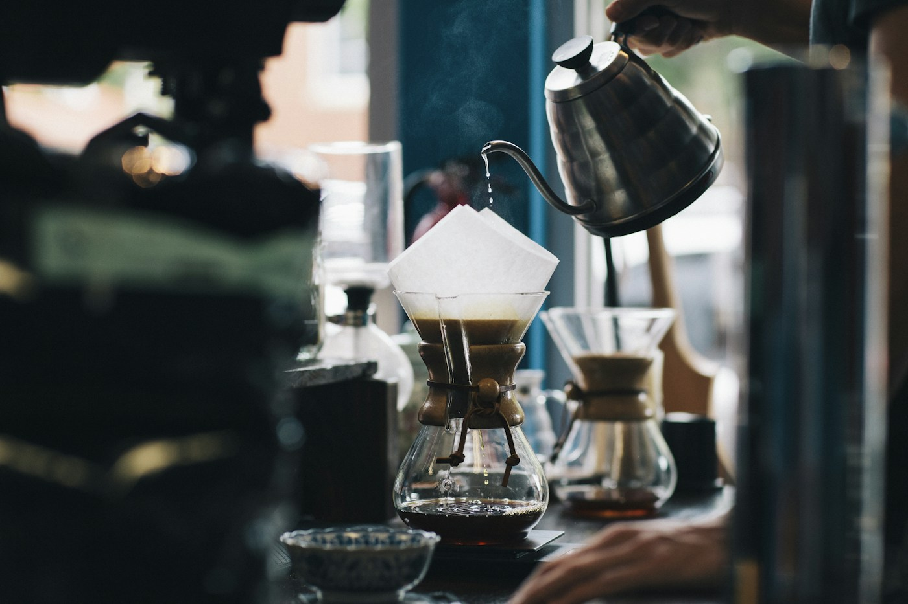

House filter
Seasonal single origin · notes of cacao & orange
Coffee for the in-between
A neighborhood coffee bar concept
Good coffee. Warm bread. A little room to arrive before the day asks anything of you.
Explore the menu
A note on the cup
We keep the menu close to the season and the coffee close to the source. Nothing complicated. Just a good cup, made carefully, and a place to enjoy it.
Come by sometimeA place in the neighborhood
Sample address
18 Narra Street, Quezon City
Tuesday — Sunday
7:00 in the morning — 4:00 in the afternoon
Fictional location and hours for this demo.
See what’s brewing